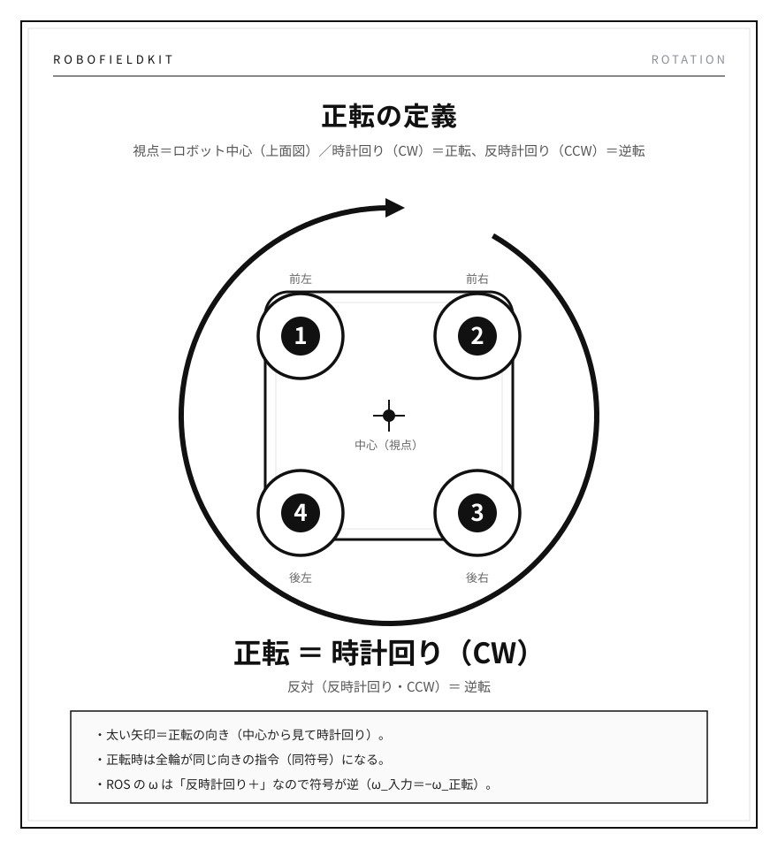
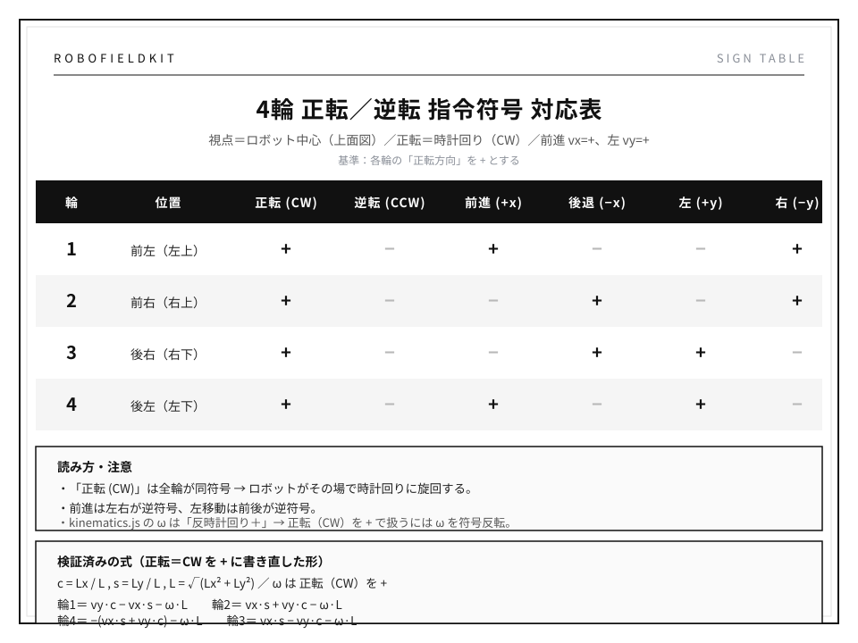

視点＝ロボット中心（上面図）／時計回り（CW）＝正転、反時計回り（CCW）＝逆転

回転方向は絶対値ではない。同じ回転でも、どの面から見るかで「左回り／右回り」が入れ替わる。
そのため「どこから見て」を先に固定する。本プロジェクトは 視点＝ロボット中心（上面図）。
ROS は右手系（z 上向き）で、上から見て反時計回りが ＋。
ω_code = −ω_正転cmd_vel.angular.z や逆運動学へ渡すときは符号反転が必要。

| 輪 | 位置 | 正転(CW) | 逆転(CCW) | 前進(+x) | 後退(−x) | 左(+y) | 右(−y) |
|---|---|---|---|---|---|---|---|
| 1 | 前左（左上） | + | − | + | − | − | + |
| 2 | 前右（右上） | + | − | − | + | − | + |
| 3 | 後右（右下） | + | − | − | + | + | − |
| 4 | 後左（左下） | + | − | + | − | + | − |
kinematics.js の omniWheels）Lx=0.10, Ly=0.15（テスト既定値）で実行。結果は 全項目 PASS。
L = √(Lx²+Ly²) = 0.180 で一致BᵀB u = Bᵀw）：誤差 1.1e-16（モデルは可逆）omniWheels の並進ゲインは vx が Ly/L、vy が Lx/L。
Lx ≠ Ly のとき前進と横移動でゲインが変わる。45°固定マウントのオムニなら本来どちらも
1/√2 ≒ 0.707 になるはずなので、ローラー角度（実機のマウント角）と要突き合わせ。
c = Lx / L、s = Ly / L、L = √(Lx² + Ly²)、ω は正転（CW）を ＋
vy·c − vx·s − ω·Lvx·s + vy·c − ω·L−(vx·s + vy·c) − ω·Lvx·s − vy·c − ω·L